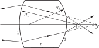
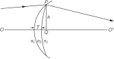
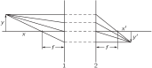

Глава 27. Геометрическая оптика
27–1 Введение#
В этой главе мы рассмотрим некоторые применения изложенных ранее принципов к устройству простейших оптических систем, используя приближение геометрической оптики. При конструировании многих оптических приборов это приближение оказывается особенно полезным. Геометрическая оптика и очень проста, и очень сложна. Я хочу этим сказать, что уже поверхностное изучение геометрической оптики в школе позволяет с помощью очень простых правил составлять грубые схемы приборов; если же мы хотим при этом учитывать искажения в линзах и прочие тонкости, то задача становится слишком сложной даже для студентов старшего курса! Если кому-нибудь действительно понадобится точно спроектировать линзу, учитывая аберрацию, то лучше всего обратиться к специальным руководствам или просто проследить путь лучей через разные поверхности (как это сделать — сказано в книгах) и, пользуясь законом преломления, определить направление вышедших из линзы пучков и выяснить, насколько хорошее изображение они создают. Считалось, что это слишком длинная процедура, но сейчас, когда мы вооружены вычислительными машинами, этот способ вполне хорош. Сформулировав задачу математически, легко подсчитать пути всех лучей. Словом, дело это простое и не требует новых принципов. Кроме того, законы и элементарной, и специальной оптики фактически неприменимы в других областях, поэтому нам не было бы необходимости чересчур подробно изучать предмет, если бы не одно важное исключение.
Оказалось, что наиболее современная и абстрактная теория геометрической оптики, разработанная Гамильтоном, имеет весьма важные приложения в механике, причем в механике она имеет даже большее значение, чем в оптике, поэтому пусть ею занимается курс аналитической механики. А пока, понимая, что геометрическая оптика интересна только сама по себе, мы перейдем к изучению элементарных свойств оптических систем на основе принципов, изложенных в предыдущей главе.

Для дальнейшего нам понадобится одна геометрическая формула: пусть дан треугольник, высота которого h мала, а основание d велико; тогда гипотенуза s (фиг. 27.1) больше основания (нам нужно это знать, чтобы вычислить разность времен на двух различных путях света). Насколько гипотенуза больше основания? Разность \Delta = s - d можно найти несколькими способами. Один из способов состоит в следующем. Мы видим, что s^2 - d^2 = h^2, или (s - d)(s + d) = h^2. Но s - d = \Delta, а s + d \approx 2s. Таким образом,
Вот и все, что нам нужно знать из геометрии для изучения изображений, получаемых с помощью кривых поверхностей!
27–2 Фокусное расстояние для сферической поверхности#
Рассмотрим сначала простейший пример преломляющей поверхности, разделяющей две среды с разными показателями преломления (фиг. 27.2). Случай произвольных показателей пусть разберет читатель самостоятельно; нам важно рассказать об идее, задача же достаточно проста, и ее можно решить в любом частном случае. Итак, пусть слева скорость света равна 1, а справа 1/n, где n — показатель преломления. Свет в стекле идет медленнее в n раз.

Теперь представим себе точку в O на расстоянии s от лицевой поверхности стекла и другую точку O' на расстоянии s' внутри стекла, и мы хотим выбрать кривую поверхность так, чтобы каждый луч, вышедший из O и попавший на поверхность в любой точке P, преломлялся так, чтобы идти к точке O'. Для этого нужно придать поверхности такую форму, чтобы время, затрачиваемое на путь от O до P, то есть расстояние OP, деленное на скорость света (скорость здесь равна единице), плюс n \cdot O'P, то есть время на пути от P к O', было постоянной величиной, не зависящей от точки P. Это условие дает уравнение для определения поверхности. В результате оказывается, что эта поверхность представляет собой очень сложную кривую четвертого порядка, и студент может ради собственного удовольствия попытаться вычислить её с помощью аналитической геометрии. Проще рассмотреть специальный случай, соответствующий s \to \infty, потому что тогда получается кривая второго порядка, которую легче узнать. Интересно сравнить эту кривую с параболической кривой, которую мы нашли для фокусирующего зеркала, когда свет идет из бесконечности.
Итак, нужную поверхность сделать нелегко; чтобы сфокусировать свет от одной точки в другую, нужна довольно сложная поверхность. Практически такие сложные поверхности даже не пытаются создать, а пользуются компромиссным решением. Мы не будем собирать все лучи в фокус, а соберем только лучи, достаточно близкие к оси OO'. Раз идеальная форма поверхности столь сложна, возьмем вместо нее сферическую поверхность, которая имеет нужную кривизну у самой оси, и пусть далекие лучи отклоняются от оси, если они того хотят. Сферу изготовить намного проще, чем другие поверхности, поэтому выберем сферу и рассмотрим поведение лучей, падающих на сферическую поверхность. Будем требовать точной фокусировки только для тех лучей, которые проходят вблизи от оси. Иногда эти лучи называют параксиальными, а наша задача — найти условия фокусировки параксиальных лучей. Позже мы обсудим ошибки, связанные с отклонением лучей от оси.
Итак, считая, что P близко к оси, опустим перпендикуляр PQ такой, что высота PQ равна h. На мгновение представим себе, что поверхность является плоскостью, проходящей через P. В этом случае время, необходимое для перехода из O в P, превышало бы время от O до Q, а также время перехода от P к O' превышало бы время от Q до O'. Но именно поэтому стекло должно быть изогнутым, так как весь избыток времени должен компенсироваться задержкой при прохождении от V к Q! Теперь избыток времени на пути OP равен h^2/2s, а избыток времени на другом пути составляет nh^2/2s'. Этот избыток времени, который должен компенсироваться задержкой при движении вдоль VQ, отличается от того, каким бы он был в вакууме, из-за присутствия среды. Другими словами, время прохождения от V до Q не такое, как если бы путь шел прямо по воздуху, а в n раз медленнее, так что избыточная задержка на этом расстоянии составляет (n - 1)VQ. А теперь, какова же величина VQ? Если точка C — центр сферы, а её радиус равен R, то по той же формуле мы видим, что расстояние VQ равно h^2/2R. Таким образом, мы получаем закон, который связывает расстояния s и s' и определяет требуемый радиус кривизны R поверхности:
или
Если у нас заданы положение O и другое положение O' и мы хотим сфокусировать свет из O в O', то по этой формуле мы можем рассчитать требуемый радиус кривизны R поверхности.
Интересно, что та же линза с таким же радиусом кривизны R будет фокусировать и на других расстояниях, а именно для любой пары расстояний, для которых сумма двух обратных величин, одна из которых умножена на n, есть постоянная величина. Таким образом, данная линза (если ограничиваться только параксиальными лучами) будет фокусировать не только из O в O', но и между бесконечным числом других пар точек, если эти пары удовлетворяют соотношению, согласно которому 1/s + n/s' есть постоянная величина, характеризующая данную линзу.
Представляет интерес частный случай s \to \infty. Из формулы видно, что при увеличении s другое расстояние уменьшается. Другими словами, когда точка O удаляется, точка O' приближается, и наоборот. Когда точка O уходит на бесконечность, точка O' также движется внутри стекла вплоть до расстояния, называемого фокусным расстоянием f'. Если на линзу падает параллельный пучок лучей, он соберется в линзе на расстоянии f'. Можно задать вопрос и по-другому. (Вспомним правило обратимости: если свет переходит из O в O', он, разумеется, может двигаться и в обратном направлении, из O' в O.) Таким образом, если источник света находится внутри стекла, то может возникнуть вопрос, где лучи соберутся в фокус? В частности, если источник внутри стекла находится на бесконечности (та же задача), то где будет фокус вне линзы? Это расстояние обозначают через f. Можно, конечно, сказать и иначе. Если источник расположен на расстоянии f, то лучи, проходя через поверхность, выйдут параллельным пучком. Легко определить f и f':
Отметим интересный факт: если мы разделим каждое фокусное расстояние на соответствующий показатель преломления, то получим один и тот же результат! На самом деле, это общая теорема. Она справедлива для любой сложной системы линз, поэтому ее стоит запомнить. Мы не доказали эту теорему в общем виде, а лишь отметили ее применимость для одной поверхности, однако оказывается, что вообще два фокусных расстояния некоторой системы связаны подобным образом. Иногда выражение (27.3) записывают в следующем виде:
Такая форма более удобна, чем (27.3), потому что проще измерить f, чем кривизну и показатель преломления линзы. Если нам не нужно самим конструировать линзу или изучать в подробностях весь процесс, а достаточно достать линзу с полки, то нас будет интересовать только величина f, а не n, 1 и R!
Любопытная ситуация возникает, когда s становится меньше f. Что же тогда происходит? Если s < f, то (1/s) > (1/f), и поэтому s' отрицательна; наша формула утверждает, что свет фокусируется только при отрицательном значении s', — понимайте как хотите! Но означает это нечто весьма определенное и интересное. Другими словами, эта формула остается полезной и для отрицательных значений. Что она означает, ясно из фиг. 27.3. Исходящие из O лучи, правда, преломляются на поверхности, но в фокус не собираются, так как O расположена слишком близко к поверхности, и они становятся «более чем параллельны». Однако они расходятся так, как будто бы вышли из точки O' вне стекла. Это кажущееся изображение, или, как иногда говорят, мнимое изображение. Изображение O' на фиг. 27.2 называется действительным изображением. Если свет действительно сходится в точке, это действительное изображение. Но если кажется, что свет исходит из некоторой фиктивной точки, отличной от первоначальной точки, это мнимое изображение. Следовательно, когда s' получается отрицательной, это означает, что O' находится по другую сторону поверхности, и все встает на свои места.
Рассмотрим теперь интересный случай, когда R равно бесконечности; при этих условиях (1/s) + (n/s') = 0. Иными словами, s' = -ns, что означает, что если из плотной среды смотреть на некую точку в разреженной среде, то она будет казаться дальше в n раз. Точно так же мы можем использовать то же уравнение в обратном направлении: если мы смотрим через плоскую поверхность на объект, находящийся на некотором расстоянии внутри плотной среды, нам будет казаться, что свет исходит из точки, расположенной ближе, чем на самом деле (фиг. 27.4). Когда мы смотрим сверху на дно плавательного бассейна, он кажется нам мельче в 3/4 раза, чем он есть на самом деле; эта величина есть обратная величина показателя преломления воды.

Теперь мы могли бы перейти к сферическому зеркалу. Но если вникнуть в смысл сказанного нами ранее, то вполне можно разобрать этот вопрос самостоятельно. Поэтому пусть читатель сам выведет формулу для сферического зеркала, но мы отметим, что для этого полезно принять некоторые соглашения относительно рассматриваемых расстояний: расстояние до объекта s положительно, если точка O расположена слева от поверхности. Расстояние до изображения s' положительно, если точка O' расположена справа от поверхности. Радиус кривизны поверхности положителен, если центр находится справа от поверхности. Например, на фиг. 27.2 s, s' и R положительны; на фиг. 27.3 s и R положительны, а s' отрицательна. Если бы мы использовали вогнутую поверхность, наша формула (27.3) все равно давала бы правильный результат, если просто считать R отрицательной величиной.
Пользуясь приведенными условиями, можно вывести соответствующую формулу и для зеркала, положив в (27.3) n=-1 (как если бы среда за зеркалом имела показатель преломления -1), и тогда получится правильный результат!
Хотя вывод формулы (27.3) исходя из принципа наименьшего времени прост и элегантен, ту же формулу можно, конечно, получить с помощью закона Снелла, помня, что углы столь малы, что синусы углов можно заменить самими углами.
27–3 Фокусное расстояние линзы#
Рассмотрим теперь другой случай, имеющий большое практическое значение. Большинство линз, которыми мы пользуемся, имеет не одну, а две поверхности. К чему это приводит? Пусть имеется стеклянная линза, ограниченная поверхностями с разной кривизной (фиг. 27.5). Мы хотим рассмотреть задачу о фокусировании из точки O в другую точку O'. Как это сделать? Ответ таков: сначала используем формулу (27.3) для первой поверхности, забыв о второй поверхности. Это позволит нам узнать, что свет, расходящийся из O, будет казаться сходящимся или расходящимся (в зависимости от знака) из некоторой другой точки, скажем O'. Рассмотрим теперь новую задачу. Имеется другая поверхность между стеклом и воздухом, и лучи подходят к ней, сходясь к некоторой точке O'. Где они сойдутся на самом деле? Снова воспользуемся той же формулой! Находим, что они сойдутся в O''. Таким образом можно пройти, если необходимо, через 75 поверхностей, последовательно применяя одну и ту же формулу и переходя от одной поверхности к другой!

Имеются еще более сложные формулы, которые могут нам помочь в тех редких случаях нашей жизни, когда нам почему-то нужно проследить путь света через пять поверхностей. Однако если уж это необходимо, то лучше последовательно перебрать пять поверхностей, чем запоминать кучу формул, ведь может случиться, что нам вообще не придется возиться с поверхностями!
Во всяком случае, принцип расчета таков: при переходе через одну поверхность мы находим новое положение, новую точку фокуса и рассматриваем ее как источник для следующей поверхности и т. д. Чтобы действительно сделать это, поскольку на второй поверхности мы переходим из n в 1, а не из 1 в n, и поскольку во многих системах бывает несколько сортов стекла, так что имеются показатели n_1, n_2, …, нам действительно нужно обобщить формулу (27.3) на случай двух разных показателей, n_1 и n_2, а не только n. Тогда нетрудно показать, что обобщенное уравнение (27.3) имеет вид

Особенно прост частный случай, когда две поверхности очень близки друг к другу — столь близки, что мы можем пренебречь малыми ошибками из-за толщины. Если мы изобразим линзу, как показано на фиг. 27.6, мы можем задать вопрос: как должна быть построена линза, чтобы фокусировать свет из O в O'? Предположим, что свет проходит точно через край линзы в точке P. Тогда излишек времени на пути от O к O' будет равен (n_1h^2/2s) + (n_1h^2/2s'), если временно пренебречь толщиной T стекла с показателем преломления n_2. Теперь, чтобы сделать время на прямолинейном пути равным времени на пути OPO', мы должны использовать кусок стекла, толщина которого T в центре такова, чтобы задержка, вносимая при прохождении через эту толщину, была достаточной для компенсации указанного выше излишка времени. Поэтому толщина линзы в центре должна удовлетворять соотношению
Мы можем также выразить T через радиусы R_1 и R_2 обеих поверхностей. Учитывая наше условие (3), мы находим для случая R_1 < R_2 (выпуклая линза)
Отсюда получаем окончательно
Теперь мы снова отметим, что если одна из точек находится на бесконечности, то другая будет в точке, расстояние до которой мы назовем фокусным расстоянием f. Фокусное расстояние f определяется равенством
, где n= n_2/n_1.
В противоположном случае, когда s стремится к бесконечности, s' оказывается на фокусном расстоянии f'. Для нашей линзы фокусные расстояния совпадают. (Здесь мы встречаемся еще с одним частным случаем общего правила, по которому отношение фокусных расстояний равно отношению показателей преломления тех двух сред, где лучи фокусируются. Для нашей оптической системы оба показателя одинаковы, а поэтому фокусные расстояния равны.)
Забудем на время формулу для фокусного расстояния. Если вы купили линзу с неизвестными радиусами кривизны и каким-то показателем преломления, то фокусное расстояние можно просто измерить, собирая в фокус лучи, идущие от удаленного источника. Зная f, удобнее переписать нашу формулу сразу в терминах фокусного расстояния:
Давайте посмотрим теперь, как работает эта формула и что из нее получается в разных случаях. Во-первых, если s или s' бесконечно, то другое равно f. Это означает, что параллельный пучок света фокусируется на расстоянии f, и это фактически определяет f. Интересно также, что обе точки движутся в одну сторону. Если одна идет направо, то и вторая движется в ту же сторону. Кроме того, s и s' равны, если они оба равны 2f. Другими словами, если мы хотим получить симметричную ситуацию, то обнаружим, что они оба будут фокусироваться на расстоянии 2f.
27–4 Увеличение#
До сих пор мы рассматривали фокусирующее действие только для точек, лежащих на оси. Теперь обсудим также получение изображений предметов, расположенных не точно на оси, а слегка смещенных с нее, чтобы понять свойства увеличения. Когда мы устанавливаем линзу так, чтобы сфокусировать свет от маленькой нити накала в «точку» на экране, мы замечаем, что на экране получается «изображение» той же нити, отличающееся от настоящей нити лишь большим или меньшим размером. Это должно означать, что свет от каждой точки нити собирается в фокус. Чтобы получше в этом разобраться, рассмотрим линзу, схематически изображенную на фиг. 27.7. Нам известно следующее: 1) каждый луч, параллельный оси, фокусируется по другую сторону линзы в точке, называемой фокусом и расположенной на расстоянии f от линзы; 2) каждый луч, приходящий из фокуса по одну сторону линзы, выходит с другой стороны параллельно оси. С помощью только этих фактов мы докажем формулу (27.12) геометрическим путем. Пусть объект находится на расстоянии x от фокуса и его высота есть y. Мы знаем, что луч PQ отклоняется и пройдет через фокус R по другую сторону линзы. Если свет от точки P фокусируется линзой, достаточно определить путь еще одного луча, и тогда фокус будет расположен в точке пересечения двух лучей. Нужно только умело выбрать направление второго луча. Вспомним, что параллельный луч проходит через фокус, и наоборот: луч, проходящий через фокус, выходит параллельно оси! Поэтому проведем луч PT через U. (Правда, фокусируемые лучи могут быть гораздо тоньше, чем начерченные нами, но их труднее изобразить, поэтому оставим нашу прежнюю схему.) Поскольку луч параллелен оси, проведем TS параллельно XW. Пересечение S и есть искомая точка. Отсюда мы получаем нужную высоту и правильное расстояние. Обозначим высоту через y', а расстояние до фокуса через x'. Теперь можно вывести формулу для линзы. Из подобных треугольников PVU и TXU находим
Из треугольников SWR и QXR получаем
Разрешая оба равенства относительно y'/y, находим
Равенство (27.15) есть знаменитая формула для линзы; в ней содержится все, что нам нужно знать о линзах; увеличение y'/y выражено через расстояния и фокусные расстояния. Возникающее отсюда соотношение, связывающее x и x' с f, имеет вид
. Оно гораздо изящнее формулы (27.12). Мы рекомендуем читателю доказать, что при s = x + f и s' = x' + f равенства (27.12) и (27.16) совпадают.
27–5 Сложные линзы#
Опишем кратко без вывода общий результат для системы из нескольких линз. Как исследуют систему нескольких линз? Очень просто. Начнем с некоторого объекта и определим его изображение, даваемое первой линзой, пользуясь формулами (27.16), (27.12) или любой эквивалентной формулой или, наконец, изобразив все это графически. Итак, мы найдем изображение. Затем мы будем рассматривать это изображение как источник для следующей линзы и, чтобы найти новое изображение, воспользуемся второй линзой с любой заданной фокусной длиной. Проделаем такую процедуру последовательно для всей системы линз. Вот и все. В принципе здесь нет ничего нового, поэтому мы не будем входить в подробности. Однако очень интересный результат получается, когда свет входит и выходит из системы линз в одну и ту же среду, например в воздух. Любое оптическое устройство — будь то телескоп или микроскоп с произвольным количеством линз и зеркал — обладает следующим интересным свойством. Имеются две плоскости, называемые главными плоскостями системы (часто они расположены поблизости от внешних поверхностей первой и последней линзы), которые обладают следующими свойствами: 1) если свет входит в систему параллельным пучком с одной стороны, он выходит в определенный фокус, отстоящий от второй главной плоскости на фокусное расстояние, как будто вместо системы имеется тонкая линза, расположенная в этой плоскости; 2) если параллельный свет входит с другой стороны, он собирается в фокус на том же расстоянии f от первой главной плоскости, как будто там опять-таки находится тонкая линза (см. фиг. 27.8).

Само собой разумеется, если измерить, как и раньше, расстояния x и x', а также y и y', то формула (27.16), которую мы записали для тонкой линзы, будет абсолютно общей, при условии, что фокусное расстояние отсчитывается от главных плоскостей, а не от центра линзы. Для тонкой линзы главные плоскости совпадают. Получается так, как если бы мы взяли тонкую линзу, разрезали ее посредине, разнесли половинки и не заметили бы, что она разделена. Каждый входящий луч немедленно выскакивает по другую сторону от второй плоскости из той же точки, в которую он вошел в первую плоскость! Главные плоскости и фокусное расстояние находят либо вычислением, либо опытным путем; этим исчерпывается описание свойств оптической системы. Весьма интересно, что результат для столь большой и сложной оптической системы оказывается таким простым.
27–6 Аберрация#
Пока мы еще не пришли в слишком большой восторг от того, насколько великолепны линзы, мы должны поспешить добавить, что существуют также серьезные ограничения, связанные с тем, что мы, строго говоря, ограничились параксиальными лучами — лучами вблизи оси. Реальная линза, обладающая конечными размерами, вообще говоря, обнаруживает аберрации. Например, луч, идущий по оси, конечно же, проходит через фокус; луч, расположенный очень близко к оси, все же будет отлично попадать в фокус. Но по мере удаления от оси луч начинает отклоняться от фокуса, возможно, не доходя до него, а луч, падающий вблизи верхнего края, идет вниз и проходит мимо фокуса на весьма значительное расстояние. В результате вместо точечного изображения получается расплывчатое пятно. Этот эффект называется сферической аберрацией, потому что он является свойством сферических поверхностей, используемых нами вместо поверхностей правильной формы. Это можно исправить для любого конкретного расстояния до объекта, изменив форму поверхности линзы или, возможно, использовав несколько линз, расположенных так, чтобы аберрации отдельных линз взаимно компенсировали друг друга.
Линзы страдают еще одним недостатком: свет разного цвета имеет разную скорость, т. е. разные показатели преломления в стекле, а поэтому фокусное расстояние для разных цветов разное. Изображение белого пятна получается цветным, так как, когда в фокусе красный цвет, синий оказывается вне фокуса, и наоборот. Это явление называется хроматической аберрацией.
Бывают и другие искажения. Если объект находится не на оси, то добиться четкого фокуса невозможно. Легче всего это проверить, наклонив наведенную на фокус линзу так, чтобы в нее попадали лучи под большим углом к оси. Тогда изображение сильно расплывется и может случиться, что ни одного четко сфокусированного места не останется. Таким образом, линзы страдают рядом искажений, и обычно оптик-конструктор старается их выправить, соединяя по нескольку линз, с тем чтобы скомпенсировать искажения отдельных линз.
До какого предела нужно устранять аберрации? Можно ли создать абсолютно совершенную оптическую систему? Допустим, мы построили оптическую систему, которая должна собирать свет точно в одну точку. Можем ли мы теперь, рассуждая с точки зрения принципа наименьшего времени, найти условие того, насколько совершенной должна быть система? Система будет иметь какое-то входное отверстие для света. Если мы возьмем самый удаленный от оси луч, который может прийти в фокус (если, конечно, система совершенна), то времена прохождения для всех лучей будут абсолютно одинаковы. Но ничто не совершенно, так что вопрос в том, насколько ошибочным может быть время для этого луча, чтобы дальнейшее его исправление потеряло смысл? Это зависит от того, насколько совершенное изображение мы хотим получить. Но предположим, мы хотим сделать изображение настолько совершенным, насколько это вообще возможно. Тогда, конечно, нам кажется, что мы должны добиться того, чтобы каждый луч затрачивал по возможности одинаковое время. Но оказывается, это не так; за определенным пределом мы пытаемся сделать нечто слишком тонкое, поскольку теория геометрической оптики перестает работать!
Вспомним, что принцип наименьшего времени, в отличие от закона сохранения энергии или закона сохранения импульса, не является точной формулировкой. Принцип наименьшего времени — это лишь приближение, и интересно узнать, какую погрешность можно допустить, чтобы это еще не приводило к какому-либо заметному различию. Ответ заключается в том, что если мы добились того, что разность во времени между крайним лучом — самым плохим лучом, наиболее удаленным от оси, — и центральным лучом меньше периода, соответствующего одному колебанию света, то улучшать систему дальше бесполезно. Свет — это колебательный процесс с определенной частотой, которая связана с длиной волны, и если мы добились того, что разность во времени для различных лучей меньше периода, то идти дальше бесполезно.
27–7 Разрешающая способность#
Еще один интересный вопрос — очень важный с технической точки зрения для всех оптических приборов — заключается в том, какова их разрешающая способность. Когда мы создаем микроскоп, мы хотим видеть те объекты, на которые смотрим. Это означает, например, что, глядя на бактерию с пятнышком на каждом конце, мы хотим увидеть, что это два пятнышка, когда мы их увеличим. Могут подумать, что для этого нужно только получить достаточное увеличение: ведь всегда можно добавить еще линзы и увеличивать изображение снова и снова, а благодаря изобретательности конструкторов все сферические и хроматические аберрации могут быть устранены, так что нет причин, почему бы нам не продолжать увеличивать изображение. Таким образом, предел возможностей микроскопа связан не с тем, что невозможно построить линзу, увеличивающую более чем в 2000 раз. Мы можем построить систему линз, увеличивающую в 10{,}000 раз, но мы все равно не сможем увидеть две точки, расположенные слишком близко друг к другу, из-за ограниченности возможностей геометрической оптики и из-за того, что принцип наименьшего времени не является точным.
Правило, определяющее, на каком расстоянии должны находиться две точки, чтобы на изображении они казались отдельными точками, можно сформулировать очень красивым способом, связанным со временем прохождения различных лучей. Предположим теперь, что мы отвлечемся от аберраций, и представим, что для некоторой конкретной точки P (фиг. 27–9) все лучи от предмета до изображения T идут ровно одно и то же время. (Это не так, поскольку система несовершенна, но это уже другая задача.) Теперь возьмем другую близлежащую точку P' и спросим себя, будет ли ее изображение отличаться от T. Другими словами, сможем ли мы увидеть разницу между ними. Конечно, согласно геометрической оптике, должно быть два точечных изображения, но то, что мы увидим, может оказаться весьма расплывчатым, и нам не удастся разобрать, что точек две. Условие того, чтобы вторая точка фокусировалась в месте, явно отличном от первой, состоит в том, что времена прохождения двух крайних лучей P'ST и P'RT по обе стороны широкого отверстия линз от двух возможных точек объекта к данной точке изображения должны быть не равны. Почему? Потому что, если бы времена были равны, они оба, конечно, сфокусировались бы в одной и той же точке. Итак, времена не будут равны. Но насколько они должны отличаться, чтобы мы могли сказать, что они не сходятся в общем фокусе, и мы могли различить эти две точки изображения? Общее правило для разрешающей способности любого оптического прибора состоит в следующем: два различных точечных источника могут быть разрешены только в том случае, если один источник фокусируется в такой точке, что времена прохождения крайних лучей от другого источника к этой точке по сравнению с его собственным истинным изображением отличаются более чем на один период. Необходимо, чтобы разность во времени прохождения верхнего и нижнего лучей к «чужому» фокусу превышала некоторую величину, а именно была примерно равна периоду колебания света:
где \nu — частота света (число колебаний в секунду, а также скорость, деленная на длину волны). Если расстояние между точками обозначить через D, а половину угла отверстия линзы через \theta, то можно показать, что (27.17) точно равносильно утверждению, что D должно превышать \lambda/2n\sin\theta, где n — показатель преломления в точке P, а \lambda — длина волны. Таким образом, самые мелкие объекты, которые мы можем увидеть, имеют размеры порядка длины волны света. Для телескопов также существует аналогичная формула, определяющая наименьшую разность углов между двумя звездами, при которой их еще можно различить. 1